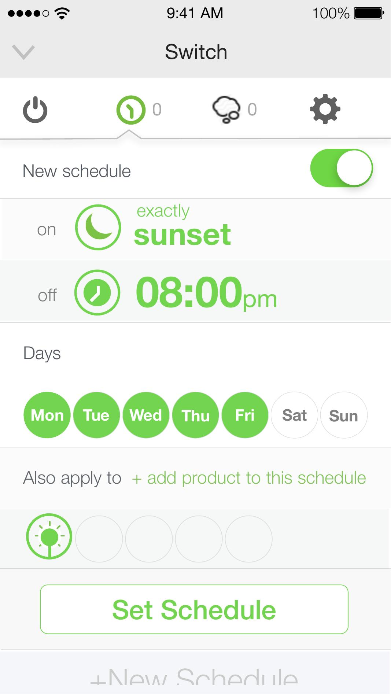
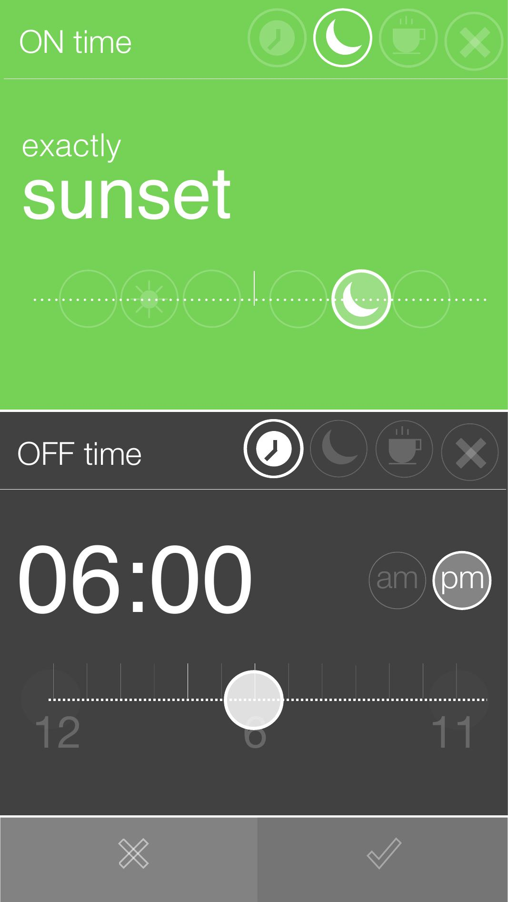
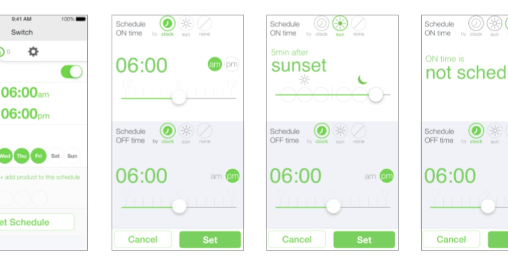
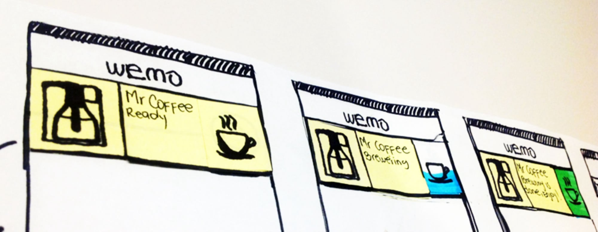
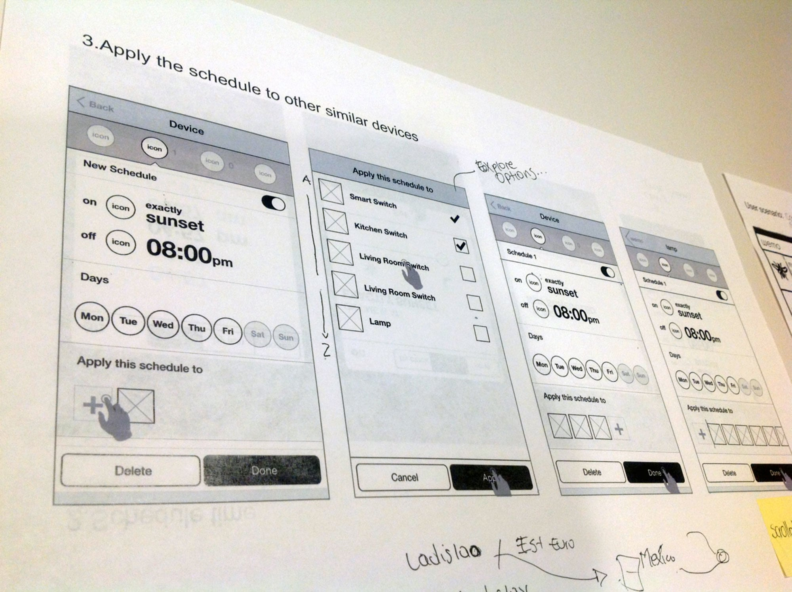
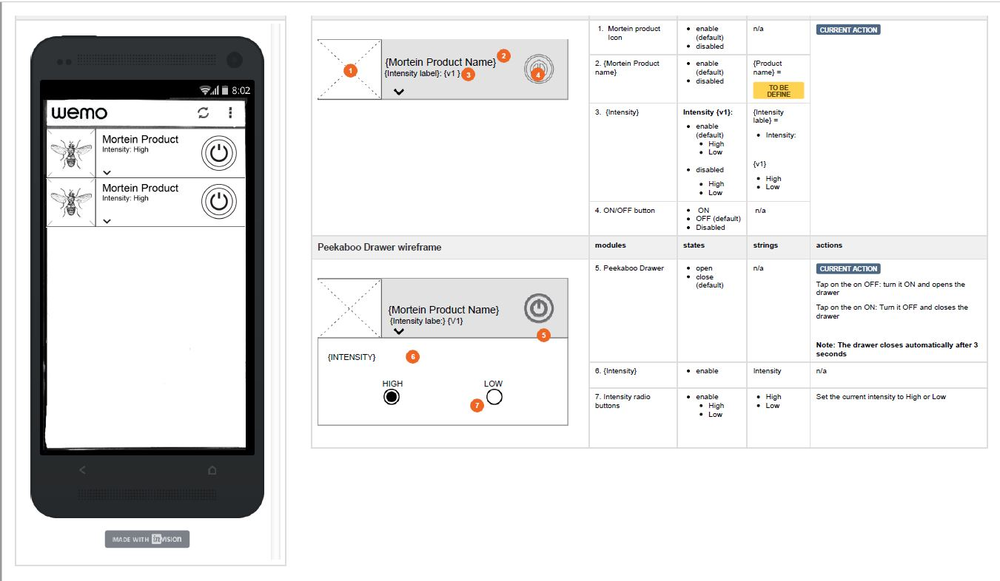
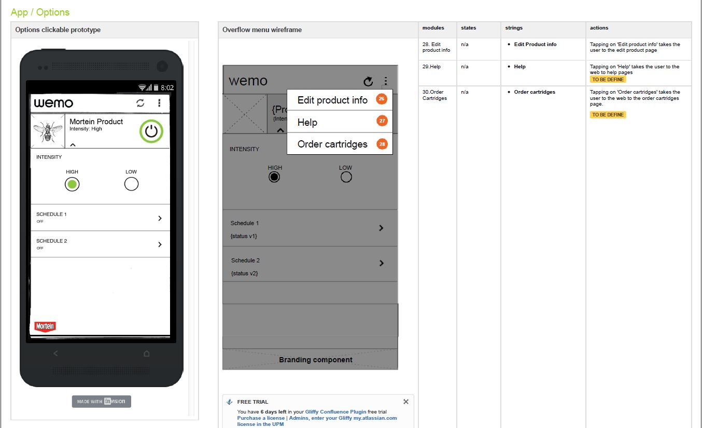

Belkin International · Los Angeles · 2014
Belkin
Belkin
WeMo

WeMo was Belkin's smart home platform — a family of Wi-Fi connected plugs, switches, and sensors that let you control and automate your home from your phone. The hardware was clever. The software needed to match.
As a UX contractor embedded in the product team, I focused on one of the most critical and complex parts of the app: scheduling and automation. How do you let someone set "turn on the porch light 5 minutes after sunset every weekday" in a way that feels intuitive — not like programming a VCR?
The answer came through rapid iteration — sketching, paper prototyping, InVision flows, Flinto transitions, and Origami micro-interactions — tested early and often until the complexity disappeared.
Smart home automation sounds simple until you try to design it. Users need to set time-based rules across multiple devices, multiple conditions, and multiple time modes — clock time, sunrise, sunset. The scheduling UI had to handle all of this without ever feeling like a settings panel.
These screens are from the clickable InVision prototype — used for user testing and stakeholder walkthroughs. They show the full scheduling flow: from the device list, through schedule creation, to the time-mode picker with its slider interaction.

Device list — all WeMo devices visible at a glance with status and power control.
Schedule overview — clock on, sunset off, weekdays selected, apply to multiple devices.

Sunset trigger — the device turns on exactly at sunset and off at 08:00pm.

Time-mode picker — sunset selected (green), clock time below with horizontal slider.
The time visualization exploration was about finding a single interaction model that could express clock time, sunrise, and sunset — without switching to separate UI paradigms for each. The horizontal slider + large type combination let users scrub through time modes naturally, with the active selection dominating the screen.

Four states: clock-based (06:00am), sun-based (5 min after sunset), unscheduled, and the picker in active use — all using the same visual language so users always know where they are.
The prototyping process moved through three fidelity levels — each one answering a different type of question. Early sketches explored flow and labelling. Mid-fidelity InVision prototypes tested navigation. Origami prototypes validated the feel of micro-interactions.
Quick hand-drawn flows explored the scheduling concept — device states, time modes, notification states. Paper prototypes caught structural problems before any digital work began.
Mid-fidelity wireframes linked in InVision for click-through testing. Flinto added tap-level transitions to validate the flow between schedule creation, device selection, and confirmation.
Used in collaboration with the visual designer to prototype physics-based micro-interactions — slider behaviour for time offsets, toggle states, and the tactile feel of the schedule controls.

Early paper sketches — "Mr Coffee Ready", "Mr Coffee Brewing", "Mr Coffee Brewing is Done (Enjoy!)" — three device states colour-coded before any digital implementation.
A key UX insight: users shouldn't have to create the same schedule separately for every device. The wireframe flow for "Apply this schedule to other similar devices" solved a real pain point — set your schedule once, then extend it across multiple devices in a single step.


Step 3 — "Apply the schedule to other similar devices." Notes read "Explore Options..." — a live annotation from a testing session with handwritten user names below.
Beyond prototyping, I produced detailed UI specifications — annotated wireframes with numbered modules, states, strings, and actions — for the engineering team. Each component was documented with its default state, enabled/disabled variations, and exact interaction behaviour.


InVision-annotated spec sheets — numbered modules (1–30), states, strings, and actions documented for each component. The Mortein product integration shows the breadth of the WeMo ecosystem: custom device branding, intensity controls, peekaboo drawers, and in-app cartridge ordering.
The WeMo scheduling UX shipped on iOS and Android as part of Belkin's smart home ecosystem — one of the most feature-complete smart home apps of its era.
A single scheduling pattern scaled across every WeMo device type — dramatically reducing design and engineering overhead for each new product launch.
Fully annotated UI specifications delivered for every component — numbered modules, states, strings, and actions — enabling clean engineering handoff.
WeMo taught me that smart home UX is deceptively hard. The interactions feel simple — turn a light on, set a schedule — but the edge cases multiply fast. What if the device is offline? What if sunrise varies by season? What if you want to apply a schedule but not to all devices of that type?
Prototyping at the right fidelity was the discipline that kept us honest. Paper caught structural problems. InVision caught flow problems. Origami caught feel problems. Each tool answered a different question — and the sequence mattered.
Working closely with a visual designer on Origami prototypes was a reminder that the best UX decisions happen at the boundary between interaction and visual design — where timing, motion, and layout all meet at once.